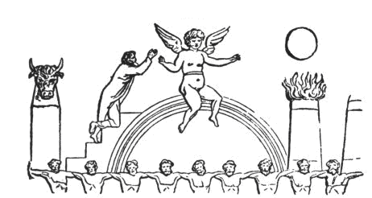
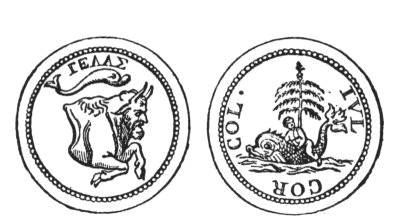
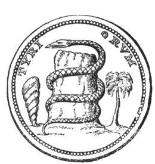
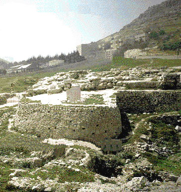
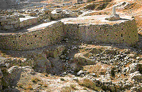

- Zodiac Position: 15- 19 degrees of Leo *(1-10 Capricorn)
- August 8th- 12th *(Dec 22-30)
- Tarot Card: 6 of Rods *(2 of Pentacles)
- Candle color: Purple
- Plant: Heliotrope
- Planet: Jupiter *(Venus)
- Metal: Tin *(Copper)
- Element of Fire *(Earth)
- Rank: DUKE
- Berith is a Day Demon and governs 26 legions of spirits
*[Given from Thoth]
"Baal" means "Lord." "Baal-Berith" is "Lord Berith." He fortells the future, discerns the past, and can turn metal into gold. He helps in rising to high places and receiving honors. He speaks with a very clear and soft voice.
SIGIL
{kind=link}
Baal-Bereth is the Father of the Yule season and the Yule (xmas) Tree. "The Christmas tree, now so common among us, was equally common in Pagan Rome and Pagan Egypt. In Egypt that tree was the palm-tree; in Rome it was the fir; the palm-tree denoting the Pagan Messiah, as Baal-Tamar, the fir referring to him as Baal-Berith."1
"The Christmas-tree, as has been stated, was generally at Rome a different tree, even the fir; but the very same idea as was implied in the palm-tree was implied in the Christmas-fir; for that covertly symbolised the new-born God as Baal-Berith, "Lord of the Covenant," and thus shadowed forth the perpetuity and everlasting nature of his power, not that after having fallen before his enemies, he had risen triumphant over them all." 2

In Egypt they worshipped Nimrod as a palm tree, referring to him as the Messiah "Baal-Tamar." Among the most ancient of Baals, he was known as Baal-Bereth, “Lord of the fir-tree.” He evolved into Baal-Berith, “Lord of the Covenant.” In Ancient Rome, where they also worshiped the fir tree, they called him "Baal-Berith."

The 25th of December, was observed in Rome as the day when the victorious God reappeared on earth, and was held at the Natalis invicti solis, "The birth-day of the unconquered Sun." Now the Yule Log represents the dead stock of Nimrod, known as the Sun-God, but cut down by his enemies; the xmas-tree represents Nimrod- the slain God reborn. The ancient practice of kissing under the mistletoe bough, most common to the Druids, was derived from Babylon, and was a representation of the Messiah, "The man the branch." The mistletoe was regarded as a divine branch --a branch that came from heaven, and grew upon a tree that sprung out of the earth. Nimrod, the God of nature, was symbolized by a great tree. But having been cut down and killed in his prime, he was now symbolized as a branchless tree stump, called the Yule Log. Then the great serpent came and wrapped itself around Nimrod (the stump). Miraculously, a new tree appeared at the side of the stump, which symbolized Nimrod’s resurrection and victory over death. Here is an illustration of an ancient Ephesian coin:

Baal-Berith was known also as "Lord of the Covenant" and as "The God Berith." He was a popular God and was worshipped in Canaan, Philistia, and Shechem. He was the protector of the covenant between between Shechem and some neighbouring Canaanitish towns, which were originally independent, but were at length brought under subjugation by the Hebrews.
"Any Israelites who might be dwelling in Shechem would be simply or protected strangers, and not parties to a covenant. The Temple of Baal-Berith had a treasury from which the citizens made a contribution to Abimelech. It was there that Gaal first came forward as a leader of the rebellion, and within its precinct the inhabitants of the tower of Shechem (the 'acropolis,') found a temporary refuge from Abimelech at the close of the revolt." 3
"Baal-Berith was also known as "God of the Community."
Below are photographs of the ancient remiains of Baal-Berith's Temple:
|  | 
The remains of Temple of Baal-Berith are a round-ended, land-filled platform on which a massive temple once stood. Dated to the 13th/12th century BCE, it measured 86 feet long and 78 feet wide and its walls were around 19 feet thick. "Archaeologists believe that it was a two-story building. |
________________________________________
1 "The Two Babylons" by Alexander Hislop 1858
2 Encyclopedia Biblica: A Critical Dictionary of the Literary Political and Religious History the Archeology Geography and Natural History, © 1899 of the Bible
3Ibid.
Illustrations taken from: "The Two Babylons" by Alexander Hislop 1858

Back to Demons, the Gods of Hell
© Copyright 2005, Joy of Satan Ministries;
Library of Congress Number: 12-16457